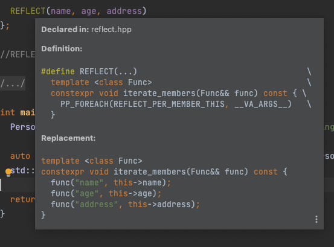
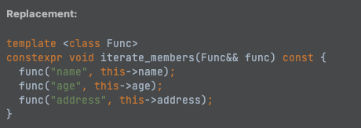
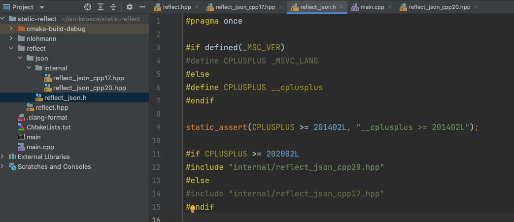

近日有位道友发了我个基于C++14的静态反射库reflect-hpp ，表示奇技淫巧完全看不懂，丢给我想让我锐评一下。我一看，好家伙，这不是小彭老师的屠龙宝术嘛，我哪敢吱声，学吧，学无止境。。。
C++黑魔法系列之static-reflect牛刀小试(上篇)
众所周知，C++没有反射，一些被Go,Java的反射惯坏了的框架开发者，上手C++难免水土不服。实际上说C++没有反射也不尽然，毕竟这玩意实现起来也没啥难度，且不说市面上存在大把反射库，就像是QT、protobuf这种赫赫有名的框架/库也都实现了反射，手法与隔壁也都大同小异，它们都是运行时反射，或者叫动态反射。
然而对于C++这门语言来说，标准一向追求的是零开销，动态反射这种拉胯的性能表现根本入不了委员会的法眼，标准C++想要提供的是编译期反射，即静态反射。实际上这一议题早就有提案了Reflect
TS ，原本计划赶在C++23前板上钉钉，甚至某些编译期厂商都按捺不住开始实现了，奈何委员会进度感人。嗯，然后不出意外的跳票了，哦，因为疫情，疫情（在跳票这方面，还得看C++委员会，不愧是你，DDDD）。
那还能咋办，三年又三年呗，要隐忍。C++26未来可期（别骂了，别骂了，已经是C++26三个大目标之一了），最新的提案详见：Reflection
for C++26 。
完整的编译期反射能力还是相当繁杂的，就不在此长篇大论了，有兴趣的前辈、道友和蝼蚁可以点开上面的传送门，自行钻研。
编译期反射
想要实现反射，首要任务是要记录Class
Type的成员信息，对于运行时反射来说，开辟一个额外的空间予以记录即可，反射实际上就是个按图索骥，没图就遍历的操作。但是对于编译期反射来说，要考虑的事情就很多了，没有原生语法糖的支持，往往只能用大量的模板和宏去创造（猪脑过载警告）。
reflect-hpp 正是如此，它在实现上使用了大量的模板和宏，通过元编程的方式在编译期生成辅助桩代码，用以支撑反射。当然，这个库只是一个最小的demo实现，作者为了向前兼容C++14，甚至舍弃了一些C++17,20的新特性，沿用了C++14之前的一些晦涩蹩脚的写法。
reflect-hpp分别用JSON和pybind做了示例，其中JSON借助了jsoncpp库做序列化和反序列化，通过静态反射桥接，可以非常方便的实现只用一句代码让任意Class类型与JSON对象/字符串之间相互转换。
整体的实现较为复杂，由于是最小实现demo作者写得也比较随意凌乱，我就不一行行展开了，而是通过roadmap的方式去打谱，一步一步逼近最终实现。考虑到C++17到C++20对于模板元变成来说又是个分水岭，我分别写一下两个版本的实现，同时也对reflect-hpp里的部分代码进行简化。
传统JSON库的任意类型转换
任意类型转换(Arbitrary Type
Conversion)，对于JSON库来说是非常重要的能力，大部分JSON库都是通过编写converter代码的方式来支持，而如果能够使用反射的能力，那么甚至可以省去converter的编写，代码改动成本降到最低。
事实上配合reflect可以选用任意的JSON库，这里我就不用reflect-hpp所举例的jsoncpp了，换成我个人最熟悉的开源库：nlohmann/json 来继续讲解，nlohmann/json是个非常modern的JSON库，我们先看看在没有反射之前，它对于任意类型转换是如何支撑的。
1 2 3 4 5 6 7 8 9 10 11 12 13 14 15 16 17 18 19 20 21 22 23 24 25 26 27 28 29 30 31 32 33 34 35 #include <iostream> #include <string> #include "nlohmann/json.hpp" struct Person {int age;void to_json (nlohmann::json& j, const Person& p) "name" ] = p.name;"age" ] = p.age;"address" ] = p.address;void from_json (const nlohmann::json& j, Person& p) at ("name" ).get_to (p.name);at ("age" ).get_to (p.age);at ("address" ).get_to (p.address);int main () "Alice" , .age = 25 , .address = "Beijing, China:" };dump (4 ) << "\n" ;get <Person>();" " << person2.age << " " << person2.address << "\n" ;return 0 ;
执行结果：
1 2 3 4 5 6 7 8 qichencao@QICHENCAO-MB1 ~/workspace/static-reflect g++ main.cpp -o main -std=c++20
显然，实现这样的转换逻辑，需要库使用者自行overload
to_json,
from_json供nlohmann/json在做类型转换时调用。这种设计当然合理，但有个问题就在于：每次Person类有字段改动，开发者都得修改to_json和from_json。那么，有没有什么办法可以自动获取Person的所有类成员变量，自动生成这一行行的字段填空代码呢？
答案是有，就是反射 。并且，这次我们来实现一个编译期反射 。
成员遍历：iterate_members
对于每个类来说，它都得定义个iterate_members可以遍历所有的成员，这个方法既可以定义在类外作为普通函数，也可以定义在类内，不论何种，我们先用trait大法封装下：
1 2 3 4 5 6 7 8 9 10 11 12 13 14 15 16 17 18 19 20 21 22 namespace reflect {template <class T >struct reflect_trait {};namespace reflect {template <>struct reflect_trait <Person> {template <class Func >static constexpr void iterate_members (const Person& person, Func&& func) func ("name" , person.name);func ("age" , person.age);func ("address" , person.address);
有了iterate_members，就可以对JSON的操作做统一封装，无非就是在Class
Type Object, JSON Object和字符串之间做转换：
1 2 3 4 5 6 7 8 9 10 11 12 13 14 15 16 17 18 19 20 21 22 23 24 25 26 27 28 29 30 31 32 33 namespace reflect_json {using json = nlohmann::json;template <class T >json serialize (const T& obj) {iterate_members (obj, [&](const char * key, auto & value) { root[key] = value; });return root;template <class T >T deserialize (const json& j) {iterate_members (obj, [&](const char * key, auto & value) {if (j.count (key)) {typename std::decay<decltype (value)>::type>();return obj;std::string to_json (const json& j, int indent = -1 ) { return j.dump (indent); }json from_json (const std::string& s) { return json::parse (s); }
现在我们封装了reflect_json命名空间，可以对任意Class
Type实现序列化/反序列化了，但要求这个class类型必须得业务自实现一个reflect_trait的模板特化。细心的读者会发现，到此为止我们只是对JSON接口与iterate_members能力做了解耦，而在特化的iterate_members实现中，我们还是得老老实实的写：
1 2 3 func ("name" , person.name);func ("age" , person.age);func ("address" , person.address);
对于业务来说，这是完全不能接受的：你这绕了一大圈，到头来还是得自己挨个一行行写成员处理，这不是脱裤子放屁吗？
我知道你很急，但你先别急，接下来，就是展现魔法的时刻。如果，我是说如果，只需要业务开发者写一行代码，就可以自动生产出上面的模板特化代码，是不是就足够优雅了呢？形如：
1 2 3 4 5 6 7 8 struct Person {int age;REFLECT_EXTERNAL (Person, name, age, address)
那么这个REFLECT_EXTERNAL要怎么实现呢，其实也不难，我们先把上面的代码照搬过来：
1 2 3 4 5 6 7 8 9 10 11 12 13 14 15 16 17 18 namespace reflect {template <class T >struct reflect_trait {};#define REFLECT_EXTERNAL(Type, ...) \ template <> \ struct reflect::reflect_trait<Type> { \ template <class Func> \ static constexpr void iterate_members(const Type& obj, Func&& func) { \ func("name" , obj.name); \ func("age" , obj.age); \ func("address" , obj.address); \ } \ };
接下来，就得想办法处理func("name", obj.name);这些格格不入的东西了，怎样才能自动生成呢？显然这里的name, age, address已经通过宏的可变参数__VA_ARGS__传进来了，只是我们还没用上，假如我们可以从__VA_ARGS__里挨个取出来，那么就只需要生成多行：func(#ARG, obj.ARG)就行了。
假设我们有个能在预处理期对__VA_ARGS__的成员逐个展开，生成一个func(#ARG, obj.ARG)就好了，比如希望写成这样的形式：
1 2 3 4 5 6 7 8 9 10 11 #define REFLECT_PER_MEMBER(x) \ func(#x, obj.x); #define REFLECT_EXTERNAL(Type, ...) \ template <> \ struct reflect::reflect_trait<Type> { \ template <class Func> \ static constexpr void iterate_members(const Type& obj, Func&& func) { \ PP_FOREACH(REFLECT_PER_MEMBER, __VA_ARGS__) \ } \ };
问题也就迎刃而解了。
想要做到预处理期的可变参数展开，需要用到一个经典的PP_FOREACH实现手法：
1 2 3 4 5 6 7 8 9 10 11 12 13 14 15 16 17 #define PP_CONCAT_IMPL(a, b) a##b #define PP_CONCAT(a, b) PP_CONCAT_IMPL(a, b) #define PP_FOREACH_1(f, _1) f(_1) #define PP_FOREACH_2(f, _1, _2) PP_FOREACH_1(f, _1) f(_2) #define PP_FOREACH_3(f, _1, _2, _3) PP_FOREACH_2(f, _1, _2) f(_3) #define PP_NARGS_IMPL(_1, _2, _3, N, ...) N #define PP_NARGS(...) PP_NARGS_IMPL(__VA_ARGS__, 3, 2, 1) #define PP_FOREACH(f, ...) PP_CONCAT(PP_FOREACH_, PP_NARGS(__VA_ARGS__))(f, __VA_ARGS__)
PP_FOREACH的实现相当巧妙，未防喧宾夺主，这里就不长篇大论了，读者可以细细品味上面的注释，自行测试一番则可感悟。实现手法源于boost/describe/pp_for_each.hpp，这里是简化后的实现。
看看替换的结果是否符合预期：
没毛病！
类内也能定义iterate_members
稍加调整，我们也可以支持在类内定义iterate_members：
1 2 3 4 5 6 7 8 #define REFLECT_PER_MEMBER_THIS(x) func(#x, this->x); #define REFLECT(...) \ template <class Func> \ constexpr void iterate_members(Func&& func) const { \ PP_FOREACH(REFLECT_PER_MEMBER_THIS, __VA_ARGS__) \ }
业务代码可以这样写，显得更加内聚：
1 2 3 4 5 6 7 struct Person {int age;REFLECT (name, age, address)

然后，再对reflect_trait做一下小小的升级，让它能够找到在类内定义的成员函数iterate_members：
1 2 3 4 5 6 7 8 template <class T >struct reflect_trait {template <class Func> static constexpr void iterate_members (const T &obj, Func&& func) {template iterate_members (std::forward<Func>(func))
如此，对于使用REFLECT宏在类内定义iterate_members成员函数的类型T，在json的serialize方法里，通过reflect_trait拿到的就是主模板里实现的iterate_members，而对于使用REFLECT_EXTERNAL在类外定义模板特化实现体的类T来说，reflect_trait拿到的是类外普通函数(传递T对象参数)。
当然，对模板元编程来说，非静态成员函数模板限制颇多（实例化时机引发的血案），另一方面，搞个REFLECT_PER_MEMBER_THIS闹分裂导致主模板里的iterate_members的签名和特化体的实现格格不入，为了方便后续的扩展，我们把风格统一一下，改成静态函数模板：
1 2 3 4 5 6 7 8 9 10 11 12 13 14 #define REFLECT(...) \ template <class This, class Func> \ static constexpr void iterate_members(This& obj, Func&& f) { \ PP_FOREACH(REFLECT_PER_MEMBER, __VA_ARGS__) \ } template <class T >struct reflect_trait {template <class Func >static constexpr void iterate_members (T& obj, Func&& func) T::template iterate_members (obj, std::forward<Func>(func)) ;
诶嘿，这下子一致了，舒服了。
为啥要同时提供REFLECT和REFLECT_EXTERNAL呢？毕竟有些时候咱们不方便改人家封装的class(比如标准库、第三方库)，因此REFLECT_EXTERNAL在这方面具有更高的灵活性。
嵌套与递归
到目前为止，我们的reflect_json在处理对象时，只考虑传递进来的是个基础的JSON对象型，比如我们的Person，其内都是平铺了JSON基础型(整数、字符串等)，然而，真实的业务class往往比较复杂，存在嵌套结构，比如我们对上面的Person做一下调整：
1 2 3 4 5 6 7 8 9 10 11 12 13 14 15 16 17 18 19 20 21 22 23 struct Address {REFLECT (country, city)struct Person {int age;REFLECT (name, age, address)int main () "Alice" , .age = 25 , .address = {.country = "China" , .city = "Shenzhen" }};auto bytes = reflect_json::to_json (reflect_json::serialize (person), 4 );"\n" ;return 0 ;

这个时候生成的反射桩代码，对于咱们的serialize就不灵了：
1 2 3 ./nlohmann/json.hpp:20534:17: note: candidate function not viable: no known conversion from 'const Address' to 'basic_json<>' for 1st argument
显然，咱们没法把Address对象直接通过赋值的方式转成子对象塞到json对象中，这个过程显然要递归处理，serialize的写法应该像这样：
1 2 3 4 5 6 7 8 9 template <class T >json serialize (const T& obj) {iterate_members (obj, [&](const char * key, auto & value) {serialize (value);return root;
但这样写却又不够，因为我们需要分辨出哪些是基础类型，可以直接作为json对象塞进root[key] = value的，哪些又是对象类型(应用了反射)，需要递归处理，
在C++20之前，我们需要通过函数模板重载+SFINAE大法来控制重载决议后最终选择某一个serialize，C++20之后可以使用concept来处理：
1 2 3 4 5 6 7 8 9 10 11 12 13 14 15 16 17 18 19 20 21 22 23 24 25 26 27 28 29 30 31 32 33 34 35 36 37 template <class T >concept is_json_object = requires (T t) {template iterate_members (t, [](const char * key, auto & value) {});template <class T> requires (!is_json_object<T>) json serialize (const T& obj) {return json (obj);template <class T > requires (is_json_object<T>)json serialize (const T& obj) {iterate_members (const_cast <T&>(obj), [&](const char * key, auto & value) {serialize (value);return root;template <class T> requires (!is_json_object<T>) T deserialize (const json& j) {return j.get <T>();template <class T> requires (is_json_object<T>) T deserialize (const json& j) {iterate_members (obj, [&](const char * key, auto & value) {if (j.count (key)) {decay_t <decltype (value)>>(j[key]);return obj;
但是还有个小问题，is_json_object是根据T是否具有成员函数来判断的，它无法检测到那些使用REFLECT_EXTERNAL的class的，我们得换种方法来检测，稍稍改造下reflect_trait：
1 2 3 4 5 6 7 8 9 10 11 12 13 14 15 16 17 18 19 20 21 22 23 template <class T >struct reflect_trait {static constexpr bool is_json_object = false ;template <class Func >static constexpr void iterate_members (T& obj, Func&& func) T::template iterate_members (obj, std::forward<Func>(func)) ;#define REFLECT_EXTERNAL(Type, ...) \ template <> \ struct reflect::reflect_trait<Type> { \ static constexpr bool is_json_object = true; \ \ template <class Func> \ static constexpr void iterate_members(Type& obj, Func&& f) { \ PP_FOREACH(REFLECT_PER_MEMBER, __VA_ARGS__) \ } \ };
如此，我们就可以这样重写concept:
1 2 3 4 5 6 7 8 9 10 template <class T >concept has_iterate_members = requires (T t) {template iterate_members (t, [](const char * key, auto & value) {});template <class T >concept has_external_iterate_members = reflect::reflect_trait<T>::is_json_object;template <class T >concept is_json_object = has_iterate_members<T> || has_external_iterate_members<T>;
事实上，对于那些定义了REFLECT的类型，我们也可以通过判定is_json_object的值的方式，我们把判断其是否拥有成员函数iterate_members的concept一并下沉到trait里，简单改造下：
1 2 3 4 5 6 7 8 9 10 11 12 13 14 15 16 17 18 19 20 21 22 23 24 25 26 27 28 29 30 31 32 33 34 35 36 37 38 39 40 41 #define REFLECT_EXTERNAL(Type, ...) \ template <> \ struct reflect::reflect_trait<Type> { \ static constexpr bool has_members() { return true; } \ \ template <class Func> \ static constexpr void iterate_members(Type& obj, Func&& f) { \ PP_FOREACH(REFLECT_PER_MEMBER, __VA_ARGS__) \ } \ }; #define REFLECT(...) \ template <class This, class Func> \ static constexpr void iterate_members(This& obj, Func&& f) { \ PP_FOREACH(REFLECT_PER_MEMBER, __VA_ARGS__) \ } template <class T >constexpr auto has_members_test (int ) -> decltype (T::template iterate_members<T>(std::declval<T&>(), nullptr ), true ) return true ;template <class T >constexpr bool has_members_test (...) return false ;template <class T >struct reflect_trait {static constexpr bool has_members () return has_members_test <T>(0 ); }template <class Func >static constexpr void iterate_members (T& obj, Func&& func) T::template iterate_members (obj, std::forward<Func>(func)) ;
至此，大功告成。
数组的处理
除了对象结构外，JSON还有个麻烦的数组结构，上述的代码对于std::vector<int>类型的成员是可以正确处理的，比如：
1 2 3 4 5 6 7 8 9 10 11 12 13 14 15 16 17 18 19 20 struct Address {int > numbers;REFLECT (country, city, numbers)int main () "Alice" , .age = 25 , .address = {.country = "China" , .city = "Shenzhen" , .numbers = {1 , 2 , 3 }}};auto bytes = reflect_json::to_json (reflect_json::serialize (person), 4 );"\n" ;deserialize <Person>(reflect_json::from_json (bytes));" " << person2.age << " " << person2.address.city << "\n" ;return 0 ;
1 2 3 4 5 6 7 8 9 10 11 12 13 14 15 qichencao@QICHENCAO-MB1 ~/workspace/static-reflect ./main
这得益于nlohmann/json库可以对std::vector<int>这种基础型数组直接转json对象，但如果vector中类型是个对象型的话，上面的代码就行不通了。
我们得想办法对数组型做一下处理，而不是简单的return json(obj);：
1 2 3 4 5 6 7 8 9 10 11 12 13 14 15 16 17 18 19 20 21 22 template <class T >concept is_vector = std::is_same_v<std::vector<typename T::value_type>, T>;template <class T >requires (is_vector<T>) json serialize (const T& obj) {for (const auto & value : obj) {push_back (reflect::json::serialize (value));return root;template <class T >requires (is_vector<T>) T deserialize (const json& j) {for (const auto & value : j) {push_back (deserialize <typename T::value_type>(value));return obj;
到此，我们就可以对数组和对象进行随意嵌套了：
1 2 3 4 5 6 7 8 9 10 11 12 13 14 15 16 17 18 19 20 21 22 23 24 25 26 27 28 29 struct Address {REFLECT (country, city)struct Person {int age;REFLECT (name, age, address)int main () "Alice" ,25 ,"China" , .city = "Shenzhen" }, {.country = "China" , .city = "Beijing" }}};auto bytes = reflect_json::to_json (reflect_json::serialize (person), 4 );"\n" ;deserialize <Person>(reflect_json::from_json (bytes));" " << person2.age << " address size:" << person2.address.size () << "\n" ;return 0 ;
1 2 3 4 5 6 7 8 9 10 11 12 13 14 15 16 qichencao@QICHENCAO-MB1 ~/workspace/static-reflect ./main
实际上除了对std::vector做特化处理外，还应该对std::array，原生数组做特化处理。此外，像是nlohmann/json还默认支持std::map容器型作为天然的对象型，它也可以做特化处理，通过concept+重载大法，我们可以为所欲为。限于篇幅，这里就不展开了。
没有concept，就只能C++17轮椅漂移
自C++11开始，标准就一直在扩充模板元编程的能力，陆陆续续纳入了可变参数模板、trait、if
constexpr、concept等。C++20所引入的concept极大的简化了模板元编程的代码（你看看人家Rust含着金汤匙Trait出生），在没有concept的时代，我们只能通过传统的SFINAE机制来做各种Type/Value
Trait，基于Tag做元函数转发，因此，在这一时期有相当多的代码，它们编写得晦涩难懂，都是通过迂回的手法去达成一个很简单的目标（滥用三元表达式、decltype、编译期递归）。
事实上哪怕从C++11往回看也是一样，比如最早的loki库作为模板元编程的教科书，其中奇技淫巧和被滥用的语法(如enum)更是数不胜数。
在小彭大典的开篇里，举得例子便深刻的揭露了C++模板编程的黑魔法编年史，对模板编程不熟悉的朋友，强烈建议移步小彭大典 看个热闹。
比喻一下：C++11之前就是个高位截瘫患者，C++11开始能坐上轮椅了，C++14和C++17就一直在研究怎么能让轮椅漂移，直到C++20，才算站了起来。
我们把上面的代码改一改，不用concept，来实现一下reflect_json的代码:
1 2 3 4 5 6 7 8 9 10 11 12 13 14 15 16 17 18 19 20 21 22 23 24 25 26 27 28 29 30 31 32 33 34 35 36 37 38 39 40 41 42 43 44 45 46 47 48 49 50 51 52 53 54 55 56 57 58 59 60 61 62 63 64 65 66 67 68 69 70 71 72 73 74 75 76 77 78 79 80 81 82 83 84 85 86 87 88 89 90 91 92 93 94 95 96 97 98 99 100 101 102 103 104 105 106 107 108 109 namespace {template <class T >struct special_traits : std::false_type {};namespace reflect::json {using json = nlohmann::json;template <class T , std::enable_if_t <!reflect::reflect_trait<T>::has_members () && !special_traits<T>::value, int > = 0 >serialize (const T& obj) {return json (obj);template <class T , std::enable_if_t <!reflect::reflect_trait<T>::has_members () && special_traits<T>::value, int > = 0 >serialize (const T& obj) {return special_traits<T>::serialize (obj);template <class T , std::enable_if_t <reflect::reflect_trait<T>::has_members (), int > = 0 >serialize (const T& obj) {iterate_members (const_cast <T&>(obj),const char * key, auto & value) { root[key] = serialize (value); });return root;template <class T , std::enable_if_t <!reflect::reflect_trait<T>::has_members () && !special_traits<T>::value, int > = 0 >deserialize (const json& j) {return j.get <T>();template <class T , std::enable_if_t <!reflect::reflect_trait<T>::has_members () && special_traits<T>::value, int > = 0 >deserialize (const json& j) {return special_traits<T>::deserialize (j);template <class T , std::enable_if_t <reflect::reflect_trait<T>::has_members (), int > = 0 >deserialize (const json& j) {iterate_members (obj, [&](const char * key, auto & v) {if (j.count (key)) {decay_t <decltype (v)>>(j.at (key));return obj;json from_json (const std::string& s) { return json::parse (s); }std::string to_json (const json& j, int indent = -1 ) { return j.dump (indent); }namespace {using json = nlohmann::json;template <class T , class Alloc >struct special_traits <std::vector<T, Alloc>> : std::true_type {static json serialize (std::vector<T, Alloc> const & vec) for (const auto & value : vec) {push_back (reflect::json::serialize (value));return root;static std::vector<T, Alloc> deserialize (json const & j) for (const auto & value : j) {push_back (reflect::json::deserialize <T>(value));return vec;template <class T , class V , class Compare , class Alloc >struct special_traits <std::map<T, V, Compare, Alloc>> : std::true_type {static json serialize (std::map<T, V, Compare, Alloc> const & map) for (const auto & [key, value] : map) {serialize (key)] = reflect::json::serialize (value);return root;static std::map<T, V, Compare, Alloc> deserialize (json const & j) for (const auto & [key, value] : j.items ()) {deserialize <T>(key)] = reflect::json::deserialize <V>(value);return map;
横向对比C++20的代码，明显要臃肿得多。
业务代码测试
两个版本都重新封装下，搞成这样的目录结构：

reflect_json命名空间也改一下，折叠成reflect::json，显得更加内聚。
再把业务代码简单写一写，分别测试C++20和C++17这两个版本：
1 2 3 4 5 6 7 8 9 10 11 12 13 14 15 16 17 18 19 20 21 22 23 24 25 26 27 28 29 30 31 32 33 34 35 36 37 38 39 40 41 42 43 44 45 46 47 48 49 50 51 52 53 54 55 56 57 58 59 60 61 62 63 64 65 66 67 68 69 70 71 72 73 74 75 76 77 78 79 80 81 82 83 84 85 86 87 88 89 90 91 92 93 94 95 96 97 98 99 #include <iostream> #include <map> #include <string> #include <vector> #include "nlohmann/json.hpp" #include "reflect/json/reflect_json.h" #include "reflect/reflect.hpp" struct Address {REFLECT_EXTERNAL (Address, country, city, streets)struct Score {int score;REFLECT (score)struct Person {int age;REFLECT (name, age, address, scores)template <class T >operator <<(std::ostream& os, const std::vector<T>& v) {"[" ;for (const auto & e : v) {", " ;if (!v.empty ()) {"\b\b" ;"]" ;return os;template <class T >operator <<(std::ostream& os, const std::map<std::string, T>& m) {"{" ;for (const auto & [k, v] : m) {": " << v << ", " ;if (!m.empty ()) {"\b\b" ;"}" ;return os;operator <<(std::ostream& os, const Address& a) {"{city: " << a.city << ", streets: " << a.streets << "}" ;return os;operator <<(std::ostream& os, const Person& p) {"{name: " << p.name << ", age: " << p.age << ", address: " << p.address << ", scores: " << p.scores << "}" ;return os;operator <<(std::ostream& os, const Score& s){"{score: " << s.score << "}" ;return os;int main () "Alice" ,25 ,"China" ,"Beijing" ,"Xingang Street" , "Chaoyang Street" },"math" , {85 }}, {"english" , {90 }}} };serialize (p1);dump (4 ) << "\n" ;auto p2 = reflect::json::deserialize <Person>(j);"\n" ;return 0 ;
不论使用何种C++版本，都成功编译并运行：
1 2 3 4 5 6 7 8 9 10 11 12 13 14 15 16 17 18 19 20 21 {
小结
到此为止，我们实际上只是摸索了一下实现编译期反射的思路，如果此前有了解过C++的运行时反射实现手法，那么就会发现差别还是相当大，编译期元编程的复杂程度也直线飙升。事实上完整的编译期反射远远要比上述能力更加丰富，除了reflect-hpp还有很多大佬实现的静态反射库，限于篇幅，我们只好留到下讲（下次一定）。
本文编写的demo代码托管在static-reflect 。
附录